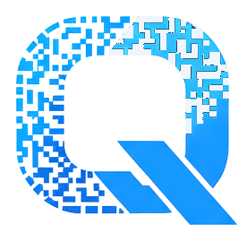
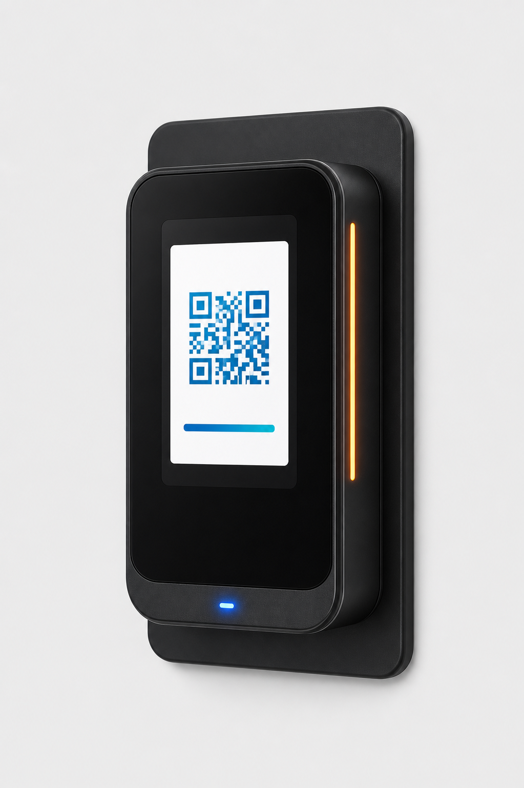
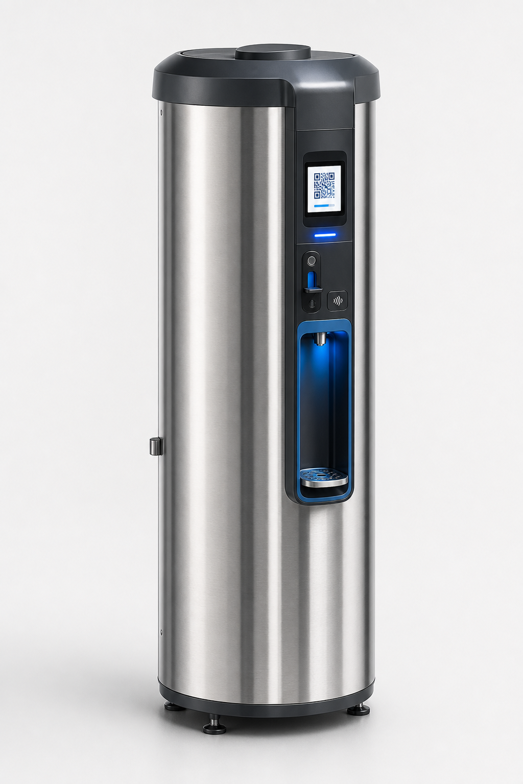
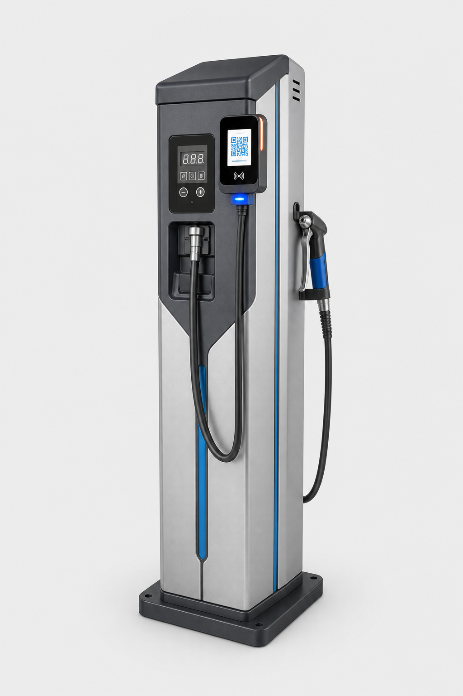

Habilita por pago
El usuario escanea un QR dinamico y SmartQ habilita una sesion de agua caliente por precio, tiempo o regla operativa.

SmartQ QR dinamico + controlQR dinamico + control fisico
SmartQ no se queda en cobrar: valida el pago, habilita la maquina, registra eventos y lleva telemetria a expendedoras de agua caliente, vending MDB y equipos que ya trabajan con validador de monedas.
Producto principal
El usuario escanea un QR dinamico y SmartQ habilita una sesion de agua caliente por precio, tiempo o regla operativa.
TermoControl gobierna la entrega fisica, los tiempos, los estados y las condiciones de funcionamiento del equipo.
SmartQ Control centraliza ventas, contadores, eventos, alertas y telemetria para operar sin depender del efectivo.
Hardware SmartQ
Agua caliente
Hardware para controlar el funcionamiento completo de expendedoras de agua caliente y habilitar el servicio con QR dinamico.
Vending MDB
QR dinamico para incorporar en maquinas expendedoras con protocolo MDB.
Pulso, relay o tiempo
QR dinamico para cualquier equipo que ya funciona con validador de monedas.
Cafe corporativo
NFC + MDB para CoffeeControl. Identifica usuarios y habilita consumos controlados.
Agua caliente
El diferencial esta en unir pago, logica de uso y hardware. En agua caliente, TermoControl puede habilitar la entrega, medir eventos, aplicar reglas y mantener la operacion conectada a SmartQ Control.



Ecosistema SmartQ
Pagos y flota
Gestiona equipos, sedes, cuentas de Mercado Pago, QR dinamico, telemetria, comandos remotos, OTA, usuarios, permisos y reportes comerciales.
Consumo corporativo
Controla maquinas de cafe con NFC, reglas por empleado, limites diarios, stock, reportes por area y herramientas para gerente, tecnico y distribuidor.
Diferencial SmartQ
Cada operacion puede responder a maquina, precio, estado, regla, usuario o sesion.
El hardware SmartQ habilita la entrega real: agua caliente, credito MDB, pulso, relay o tiempo.
La plataforma registra ventas, contadores, estados, eventos tecnicos y actividad por equipo.
Se adapta a expendedoras existentes sin reemplazar la maquina ni perder su logica de uso.
Ventajas estrategicas
SmartQ prepara tus equipos para un escenario cada vez mas digital: menos dependencia de efectivo, menos visitas operativas y mas control desde un panel centralizado.
Producto instalado
Consulta SmartQ
Evaluamos si tu caso entra por MDB, QR dinamico, NFC, validador de monedas, pulso, relay, control temporizado o control completo para expendedoras de agua caliente.